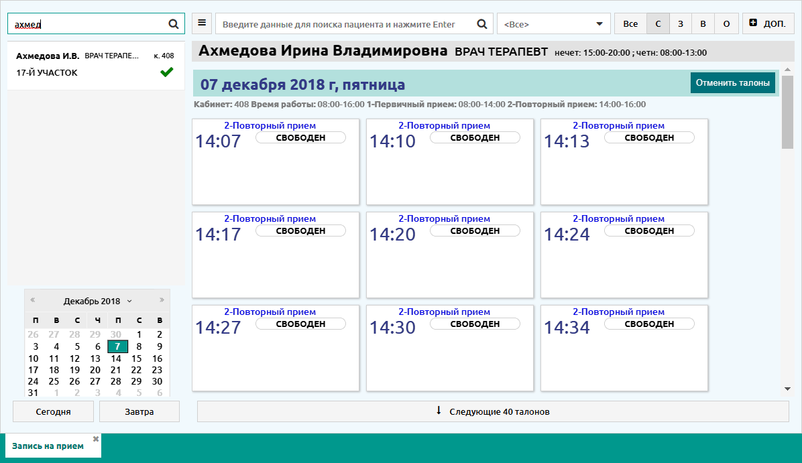
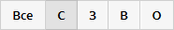
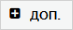
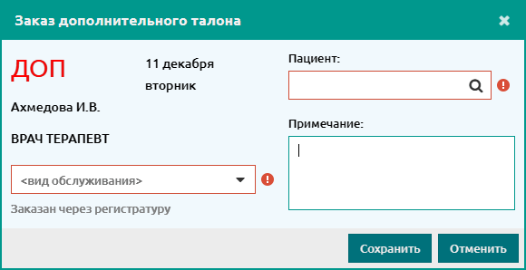
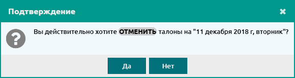
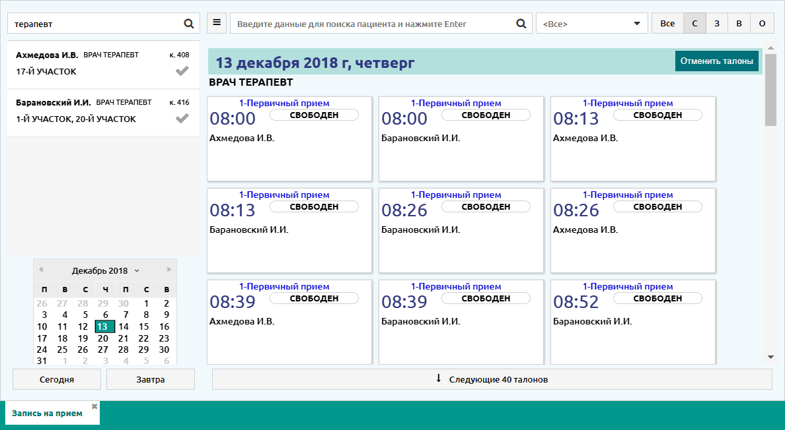
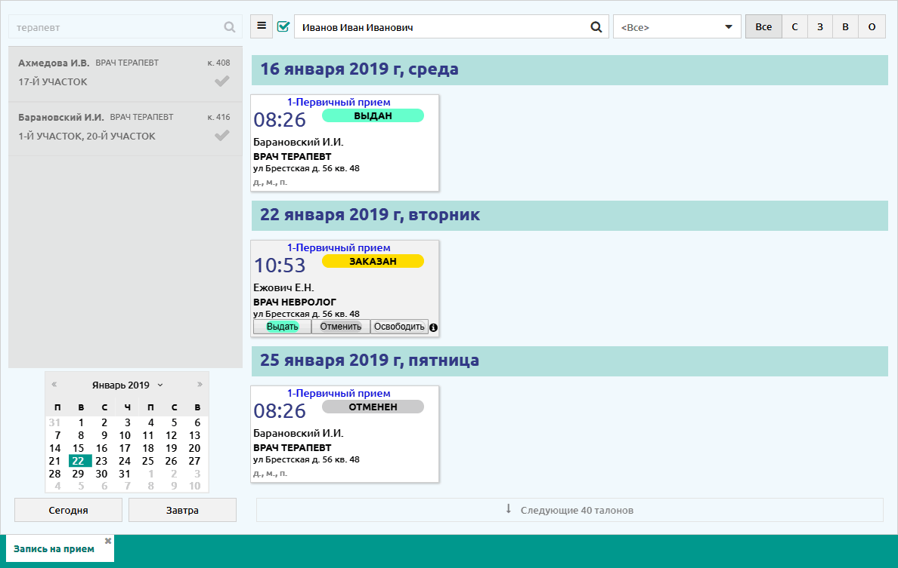
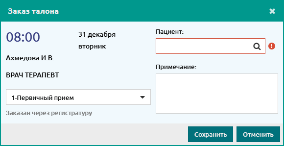

|
<< Click to Display Table of Contents >> Запись на приём. Основная форма |
 
|
|
<< Click to Display Table of Contents >> Запись на приём. Основная форма |
|
☝На форме используются типовые элементы, подробно описанные в разделе "Основные управляющие элементы". Для наилучшего понимания их работы в данном контексте, необходимо предварительно ознакомиться с их описанием.
Переход на форму происходит при клике на кнопку Далее из стартовой формы. Вид формы зависит от режима, который определяется условиями ввода на стартовой форме. Практически существует три режима работы формы: режим "талоны по одному врачу", режим "талоны по всем врачам одной специальности", режим "талоны пациента". Вне зависимости от режима форму условно можно разделить на три части: область поиска с календарём, область фильтров и функциональных элементов, основная область.
Режим "талоны по одному врачу"
Этот режим активируется в случае, когда в области поиска с календарём выбран один врач.

Область поиска с календарём содержит элементы:
•Строка поиска по ФИО и специальности врача. Поддерживает ввод любого поискового выражения (ПВ). Поиск активируется после нажатия на кнопку Найти (либо <Enter> на клавиатуре). Если ПВ содержится в ФИО только одного врача, то в результатах поиска будет только он один (активируется режим "талоны по одному врачу"). Если ПВ содержится в специальности, то активируется режим "талоны по всем врача одной специальности".
•Область результатов поиска. Визуально располагается между строкой поиска и календарём. Результаты представлены в виде "плашек", которые содержат элементы: ФИО врача, специальность, кабинет, участки. В правом нижнем углу "плашки" располагается элемент "галка", который является индикатором выбранного врача: при клике на "галку" либо двойном клике по "плашке", "галка" выделяется, и в основной области отобразятся талоны только этого врача. Для снятия выбора необходимо повторно кликнуть на "галку" либо двойным кликом по "плашке".
•Календарь. По умолчанию выбраны текущие месяц и год. Рамкой выделен текущий день, зелёным цветом выделен день, в котором есть талоны. Для выбора других месяца и года нужно нажать на соответствующие стрелки. Для выбора другого числа нужно кликнуть в него указателем мыши - в этом случае цветовое выделение переместится в выбранное число.
•Кнопки Сегодня и Завтра. Устанавливают цветовое выделение на календаре соответственно на текущий или следующий за ним день, что приводит к отображению в основной области талонов, начиная с выбранного дня.
Область фильтров и функциональных элементов содержит:
•Кнопка переключения режимов отображения талонов. Работает в двух режимах: режим Показать талоны строками представляет талоны в основной области в виде строк; режим Показать талоны блоками отображает каждый талон в виде блока.
•Поиск пациента по картотеке. После ввода ПВ и подтверждения ввода кнопкой открывается форма картотеки в модальном режиме с результатами. После выбора, ФИО пациента подставляется в строку поиска. Одновременно появляется чекбокс Показать талоны пациента, отмечен. В этом случае активируется режим "талоны пациента".
•Выпадающий список видов работ. При выборе вида работы талоны фильтруются согласно этому виду. Если талонов для выбранного вида работ нет, то будет выведено сообщение "Доступных талонов не найдено".
•Набор кнопок

. Каждая кнопка фильтрует талоны в основной области согласно их статусам: Все - отображаются талоны всех статусов, С - только свободные, З - заказанные, В - выданные. О - отменённые. По умолчанию для одного или нескольких врачей активна кнопка С. При активном режиме "талоны талоны пациента" кнопка Все нажата.•Кнопка Заказ дополнительного талона

. Появляется только для режима "талоны по одному врачу", для других режимов не доступна. При клике открывается редактор для добавления дополнительного талона на дату, выбранную в календаре. Такой талон создается без времени. При формировании отчетов эти талоны не учитываются в числе запланированных, но учитываются при расчете фактического выполнения. В редакторе нужно выбрать пациента, указать вид обслуживания, если есть необходимость - заполнить примечание. При клике на кнопку Сохранить редактор закроется, талон будет заказан и отображён в основной области. При клике на кнопку Отменить - редактор будет закрыт, талон не будет заказан.
Основная область содержит элементы:
•Блок с ФИО врача, специальностью, базовым расписанием. Информация по врачу берется из справочника "Врачи", расписание - из основной формы "График работы врачей".
•Блок с датой и днём недели, кнопка . Отменяет все талоны выбранного дня. При клике на кнопку возникает подтверждающее сообщение. При выборе Да талоны будут отменены, при выборе Нет операция отмены будет прервана.

•Блок с номером кабинета, временем рабочей смены и графиком рабочего дня. Информация для данного блока заполняется в редакторе дня врачебного приёма.
•Область с талонами. Содержит список запланированных и дополнительных талонов, отфильтрованный в соответствии с установленными фильтрами и режимами (врач (один или несколько), дата, вид работ, статус талона). Талоны могут быть представлены блоками и строками. Состав данных и элементов талона зависит его состояния:
➢свободный талон содержит: вид работы, время, метку "СВОБОДЕН"; управляющие кнопки: Заказать и Отменить (появляются при наведении).
➢заказанный талон содержит: вид работы, время, метку "ЗАКАЗАН", ФИО пациента, его адрес и номера телефонов; кнопки: Выдать, Отменить, Освободить; информационный элемент , при наведении на который появляется блок с номерами телефона пациента и текстом примечания;
➢выданный талон содержит то же, что и заказанный, кроме метки: здесь она называется "ВЫДАН".
➢Отменённый талон может содержать: вид работы, время, метку "ОТМЕНЕН" (если был отменён свободный талон) или еще дополнительно ФИО пациента, его адрес и номера телефонов (если был отменён заказанный или выданный талон); кнопку Освободить.
•Кнопка Следующие 40 талонов. При клике подгружает на страницу следующие 40 талонов. По достижению конца страницы (талоны закончились) кнопка становится неактивной.
Режим "талоны по всем врачам одной специальности"
Применяется тогда, когда нужно видеть талоны нескольких врачей одной и той же специальности. Данный режим активируется, когда поиск по специальности вернул несколько врачей (минимум два). В этом случае в основной области отобразятся талоны этих врачей (с ФИО врача на каждом талоне), отсортированные по времени: от самого раннего к более позднему.

Кроме этого, в основной области отсутствуют: Блок с ФИО врача, специальностью, базовым расписанием и Блок с номером кабинета, временем рабочей смены и графиком рабочего дня. Для просмотра данной информации по одному конкретному врачу достаточно выбрать его в области поиска с календарём.
Полезен, когда нужно просмотреть все талоны пациента. Для активации режима нужно при выбранном из картотеки пациенте отметить чекбокс Показать талоны пациента. В результате в основной области отобразятся все актуальные талоны (заказанные, выданные отменённые) для выбранного пациента, разбитые по датам.

В этом режиме строка поиска врача и результаты блокируются, кнопка Все области Область фильтров и функциональных элементов активна.
Принцип работы с талонами
Для уменьшения количества отображаемых в основной области талонов можно использовать фильтры на форме (выбор нужного врача, вида работы, статуса талонов). Для прокрутки области с талонами можно: использовать колёсико мыши либо; удерживая левую кнопку мыши с расположенным указателем на бегунке полосы прокрутки, перемещать мышь вверх или вниз; кликать по кнопкам прокрутки.
Для заказа талона нужно навести указатель мыши на свободный талон и кликнуть на кнопку Заказать. Откроется редактор талона, в котором указаны дата и время талона, ФИО врача и его специальность, вид обслуживания.

Далее в поле Пациент нужно ввести данные для поиска пациента, в открывшейся модальной форме картотеки выбрать нужного, при необходимости заполнить примечание. После нажатия на Сохранить талон будет заказан и в списке выделен жёлтым цветом (выделение используется только для последнего заказанного талона). После заказа талона ФИО пациента подставляется:
1.в строку поиска пациента (область фильтров и функциональных элементов) - этим обеспечивается быстрый доступ к режиму "талоны пациента": достаточно будет отметить чекбокс Показать талоны пациента. Если нужно ввести другое ПВ достаточно кликнуть на поле и начать вводить ПВ: выделенное ФИО предыдущего пациента заменится на вводимое ПВ.
2.в поле Пациент редактора талона при следующем заказе - полезно для заказа еще одного талона к другому врачу для этого же пациента. Для ввода других данных для поиска пациента нужно просто начать вводить ПВ: предыдущее ФИО будет заменено на него.
☝Функционал формы предусматривает возможность заказать талон пациенту не из картотеки. Для этого достаточно ввести в поле Пациент редактора талона данные для поиска пациента и выполнить поиск: если поиск не вернул результатов либо по введенным данным такого пациента не оказалось в картотеке, то нужно закрыть модальное окно картотеки, дополнить набранное ФИО (кратко указать адрес и т.п.) и нажать кнопку Сохранить. Талон будет заказан. Но просмотреть талоны по такому пациенту не выйдет: для этого нужно будет найти врача и среди всех заказанных талонов найти этот.
Для выдачи талона необходимо навести указатель мыши на нужный заказанный или выданный талон и нажать на кнопку Выдать. Талон будет распечатан на специальном предварительно настроенном чековом принтере, подключённом к данному рабочему месту.
Для отмены талона нужно навести указатель мыши на талон (свободный, заказанный, выданный) и нажать на кнопку Отменить. Программа выдаст подтверждающее сообщение, после выбора Да в котором, талон будет отменён. При выборе Нет операция отмены будет прервана.
Для освобождения талона нужно навести указатель мыши на заказанный, выданный или отменённый талон и нажать на кнопку Освободить. Программа выдаст подтверждающее сообщение, после выбора Да в котором, талон станет свободным. При выборе Нет операция будет прервана.
Для дополнительного талона применяются те же операции (Заказать, Отменить, Удалить), что и для планового плюс возможность его удаления. Для заказа нужно нажать на кнопку и заполнить поля аналогично как для планового талона, указав дополнительно вид обслуживания. Для удаления нужно навести указатель на талон и кликнуть на кнопку Удалить. Программа выдаст подтверждающее сообщение, после выбора Да в котором, талон будет удалён. При выборе Нет операция удаления будет прервана.